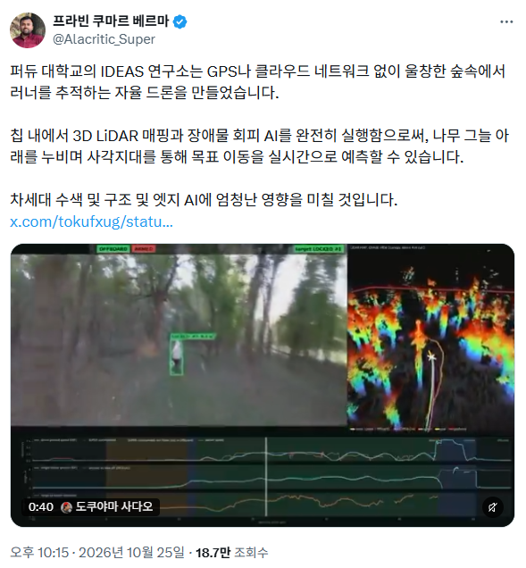

구조용입니다~

구조용입니다~
이 세상으로부터 당신을 구해드립니다.
나이거 콜옵에서 본거같아
고된삶으로부터의 해방
저거 우리나라 gop에 설치하자
저격수, 게릴라, 무장간첩 컷!
삐빗 전방 언덕에 두사람이 서서 손을 들고 있습니다
(무덤 앞에서)
지금은 실종자 수색 및 구조겠지만 나중엔 반동분자 색출 및 사살에 쓰이겠는데 ㄷㄷ
저거 있으면 곰도 다 잡을 수 있겠다
그렇게 말하면 안되고!
눈치가 눈치거
와 앞에 박격포탄만 달기만 하면 바로 쓸 수 있겠다
그렇게 말하면 안되고
구조용이에요~ 그런데 쓰지 않아요~
어허!!!
달아도 유탄정도 아닐까?
드론으로 박격포 쏠수있나?
드론이 박격포를 쏘는건 아니고
우크라에서 드론에 박격포탄을 매달아서 쓰더라 보통
들이받아서 자폭하던가 아니면 적 머리위로 떨어뜨리던가 등등
드론에 달면 아주 좋을거 같아
카메라 말고 수류탄 같은걸 달진 않겠지
탱고 다운
이세계구조용
화면 가운데 십자가 그리면
아무리 봐도 공격용인데
스카이넷!
그런데 현재 기술로 열상감지 드론에서 보병이 벗어날수 없지않음?
그 방어우산같은걸 펴고 기동할수 없잖아
뭐 울창한 숲과 정글에서 숨어있는 병사들을 추적한다고?
그냥 헬기, 드론 이빠이 띄워서 돌려도 실종자 수색 일도 아니게 되었음 좋겠다..
와 산지지형 수색에 활용하기 좋겠네
어떤 기술이든 잘만쓰면 유익하고 나쁘게 쓰면 안좋지
살려주세요
저기에 고출력 레이저를 달면 되는거죠?
뭔가 DARPA의 지원을 받고 있는 연구실일 거 같아
https://www.cs.purdue.edu/news/articles/2025/ideas-lab-awarded-5-year-defense-grant-to-advance-ai-controlled-airground-robotic-collaboration.html
자~미국 국방부에서 연구비를 지원해주긴 했지만 우연의 일치겠죠? 당연히 조난자 구조같은 인도적 목적 한정입니다!
그래 열심히하자